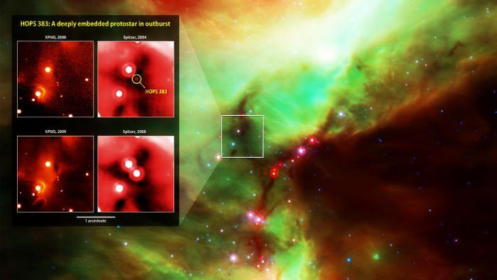
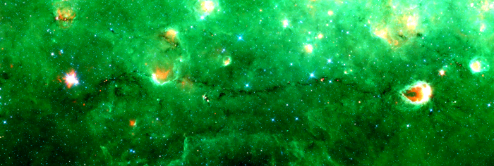
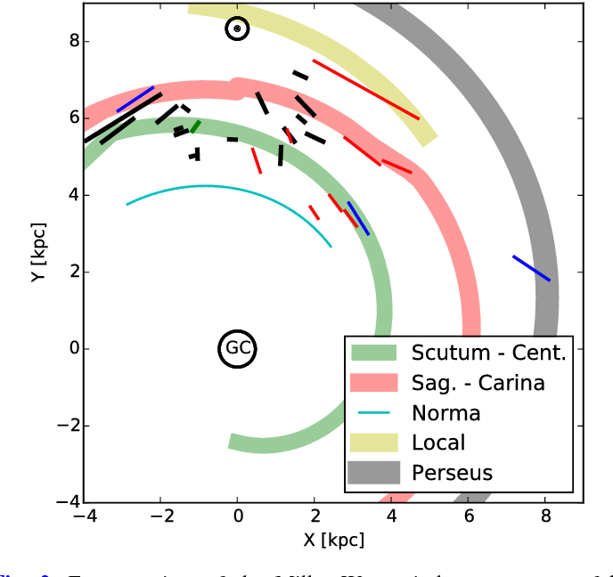

![]()
Based on (Abreu-Vicente et al. 2016). Versión del post en español 🇪🇸.
Science outreach of this work and authored by me was published and mentioned in the cover page of the March 2022 edition of the Astronomía Magazine (only in Spanish).
Herschel Reveals that Filaments are Prevalent in Molecular Clouds and Preferred Sites of Star Formation
The field of star formation has recently experienced a rejuvenation thanks to infrared observations with the Herschel and Spitzer space telescopes. Until their launch, astronomers already knew that stars form in the densest and coldest zones of the Universe: the molecular clouds (Jorge Abreu-Vicente 2023). However, Herschel provided a new and more detailed view of this fact.
Herschel revealed that stars primarily form inside filamentary structures within molecular clouds. The typical dimensions of these filaments are lengths of between 1 and 30 light-years and masses about 1000 times that of our Sun (these filaments could potentially create several hundred stars like ours). With this revelation, it became clear that filaments are a key part of star formation and the evolution of molecular clouds where it takes place.

Nessie Challenges Our Understanding of the Interstellar Medium
A filamentary structure, nicknamed Nessie (Jackson et al. 2010), has been recently discovered with a length of 240 light-years and a total mass of 42,000 suns! This discovery has left astronomers astonished due to its clear deviation from other known filamentary structures to date. However, it has impacted the theoretical astrophysics community even more. According to current theories on star formation and the structure of molecular clouds, a filament of such magnitude should collapse gravitationally along its longitudinal axis so rapidly that its observation should not be possible.

The questions arise naturally: are the observations mistaken? Perhaps we should revise our star formation theories? Is Nessie a special case, or could we find more such structures in our galaxy if we search for them? An interesting characteristic of Nessie is that observations show it to be part of one of the spiral arms of the Milky Way. If there is a network of similar filaments, and given that stars form in filaments, could we be on the verge of answering the elusive question of how stars form in the galactic context? In other words, what processes drive star formation at galactic scales? This article is directed towards the first necessary step to answer all these questions. Scouring the Milky Way for structures similar to Nessie.
The First Galactic Census of Giant Filaments
In the article, we showcase the discovery of another 16 structures similar to Nessie (This post is for dissemination purposes. For details on how these structures were discovered, see (Abreu-Vicente et al. 2016)). Therefore, we demonstrate that Nessie is not alone in this universe. The structures revealed by our work have sizes of up to 500 light-years and contain the mass of up to 100,000 suns like ours. However, our work shows that these structures are not found only in spiral arms, but can also appear in regions not associated with spiral arms.

These results raise another clear question: are there fundamental differences in the properties of giant filaments depending on whether they are in spiral arms or not? Our calculations clearly show that giant filaments associated with spiral arms have much greater potential for star formation. In other words, filaments in the arms have higher masses concentrated at high density. To understand this statement, read (Jorge Abreu-Vicente 2023) where we show the direct relationship between dense gas and star-forming capacity.
So far, we have focused on the Milky Way. However, being part of it, our view is not as direct as it could be if we could observe the Galaxy from its zenith. Since we cannot do this for technical reasons, let’s see what we find in other galaxies, and if the observations corroborate our results in the Milky Way. In the PAWS project (Schinnerer et al. 2013), detailed observations of the molecular clouds of galaxy M51 have been made (Figura 4). In them, countless filamentary structures similar to Nessie and our giant filaments can be observed. After carrying out a series of calculations with their data, the results suggest that the trend towards greater star-forming potential in the spiral arm filaments is maintained in nearby galaxies (at least in M51).
It is now in the hands of the scientific community to move forward with these results and generate new observations to finally unveil the secret of star formation at the galactic scale. And, by extension, the evolution of molecular clouds at the scale of entire galaxies. Unfortunately, the necessary observations require levels of detail and sharpness that are probably only accessible to telescopes like ALMA. And this presents a series of challenges that suggest our search will need at least a decade to come to fruition.
Referencias
Cómo citar
@online{jorge abreu-vicente2023,
author = {Jorge Abreu-Vicente, Dr.},
title = {Galactic Paleontology: Unraveling the cosmic web of the
Galaxy},
date = {2023-11-02},
url = {https://drAbreu.github.io/web/en/posts/2023-11-02-giant-molecular-filaments/},
langid = {es}
}